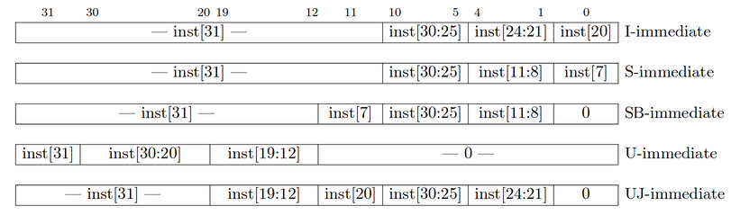

Part A Deadline: Friday, July 17, 2020
Part B Deadline: Friday, July 24, 2020
So you’ve (hopefully) dealt with CS61Classify. But, you might be wondering, how exactly do all those sw ra, 40(sp) instructions get executed? What’s inside that mystery chip in your computer called the “CPU”? Welcome to Project 3!
In Part A (Tasks 1-3), you’ll be wiring up the ALU and RegFile for a basic RISC-V CPU, as well as implementing the CPU datapath for executing addi instructions. In Part B (Tasks 4-5), you’ll use these components (and others) to wire up a working CPU that runs actual RISC-V instructions!
logisim-evolution.jar provided in your project repository.cpu.circ, to make sure your circuits fit in the testing harnesses..circ files; the autograder will fail you if you do this!.circ files use the XML format, which makes it hard for Git to automerge. We recommend working on a single computer at a time; if you use multiple computers, make sure that you have pushed and pulled your code before switching devices.For this project, the computer you’re working on needs be able to run Java and Python 3, which you should have set up in Project 2. This project specification will use python3 for sample commands; depending on your system, you may need to use python or py instead. We will be using Logisim Evolution, a Java-based GUI program, so we strongly recommend working on a laptop or desktop with Java installed and a monitor directly attached. Using window forwarding over a Hive SSH session is discouraged, and may lead to instability and general headaches.
Please follow the directions in this Google Form to get a repository: https://forms.gle/ruhhX4e5ojozzNg48. After completing the form, clone your GitHub Classroom repository and add the starter code repository as a remote:
$ git clone YOUR_REPO_URL
$ cd YOUR_REPO_NAME
$ git remote add starter https://github.com/61c-teach/su20-proj3-starter.git
$ git pull starter master
If we make changes to the starter code, you can update your repository with git pull starter master.
Your first task is to create an ALU that supports all the operations needed by the instructions in our ISA (which is described in further detail in the next section). Please note that we treat overflow as RISC-V does with unsigned instructions, meaning that we ignore overflow.
We have provided a skeleton of an ALU for you in alu.circ. It has three
inputs:
| Input Name | Bit Width | Description |
|---|---|---|
| A | 32 | Data to use for Input A in the ALU operation |
| B | 32 | Data to use for Input B in the ALU operation |
| ALUSel | 4 | Selects which operation the ALU should perform (see the list of operations with corresponding switch values below) |
… and one output:
| Output Name | Bit Width | Description |
|---|---|---|
| Result | 32 | Result of the ALU operation |
Below is the list of ALU operations for you to implement, along with their associated ALUSel values. All of them are required with the exception of mulh, which will take some extra effort to implement (but you’re certainly up to the task!). You are allowed and encouraged to use built-in Logisim blocks to implement the arithmetic operations.
| Switch Value | Instruction |
|---|---|
| 0 | add: Result = A + B |
| 1 | and: Result = A & B |
| 2 | or: Result = A | B |
| 3 | xor: Result = A ^ B |
| 4 | srl: Result = (unsigned) A >> B |
| 5 | sra: Result = (signed) A >> B |
| 6 | sll: Result = A << B |
| 7 | slt: Result = (A < B (signed)) ? 1 : 0 |
| 8 | divu: Result = (unsigned) A / B |
| 9 | remu: Result = (unsigned) A % B |
| 10 | mul: Result = (signed) (A * B)[31:0] |
| 11 | mulhu: Result = (A * B)[63:32] |
| 12 | sub: Result = A - B |
| 13 | bsel: Result = B |
| 14 | mulh: Result = (signed) (A * B)[63:32] |
When implementing mul and mulh, notice that the multiply block has a “Carry Out” output (the adder block also has this, but you will not need this). Experiment a bit with it, and see what you get for both the result and carryout with negative and positive 2’s complement numbers. You should realize why we made mulh extra credit.
You can make any modifications to alu.circ you want, but the outputs must obey the behavior specified above. If you create additional subcircuits, they must also be in alu.circ (you may not make new .circ files). Additionally, your ALU must be able to fit in the provided harness alu_harness.circ. This means that you should take care not to move inputs or outputs. To verify that changes you made didn’t break anything, you can open alu_harness.circ and ensure there are no errors and that the circuit functions well.
Hints:
add is already made for you; feel free to use a similar structure when implementing your other blocks.sra and srl.We’ve provided a group of ALU sanity tests in the tests/part_a/alu directory. Running the test runner for this group will run the ALU tests and produce output in the tests/part_a/alu/student_output directory.
$ python3 test_runner.py part_a alu
We’ve also provided binary_to_hex_alu.py, which can interpret this output in a readable format for you. To use it, do the following:
$ cd tests/part_a/alu
$ python3 binary_to_hex_alu.py PATH_TO_OUTPUT_FILE
For example, to see reference_output/alu-add-ref.out in readable format, you would do this:
$ cd tests/part_a/alu
$ python3 binary_to_hex_alu.py reference_output/alu-add-ref.out
If you want to see the difference between your output and the reference solution, put the readable outputs into new .out files and diff them. For example, for the alu-add test, you would do:
$ cd tests/part_a/alu
$ python3 binary_to_hex_alu.py reference_output/alu-add-ref.out > reference.out
$ python3 binary_to_hex_alu.py student_output/alu-add-student.out > student.out
$ diff reference.out student.out
As you learned in class, RISC-V architecture has 32 registers. However, in this project, you will only implement 9 of them (specified below) to save you some repetitive work. This means your rs1, rs2, and rd signals will still be 5-bit, but we will only test you on the specified registers.
Your RegFile should be able to write to or read from these registers specified in a given RISC-V instruction without affecting any other registers. There is one notable exception: your RegFile should NOT write to x0, even if an instruction tries. Remember that the zero register should ALWAYS have the value 0x0. You should NOT gate the clock at any point in your RegFile: the clock signal should ALWAYS connect directly to the clock input of the registers without passing through ANY combinational logic.
The registers and their corresponding numbers are listed below.
| Register Number | Register Name |
|---|---|
| x0 | x0 |
| x1 | ra |
| x2 | sp |
| x5 | t0 |
| x6 | t1 |
| x7 | t2 |
| x8 | s0 |
| x9 | s1 |
| x10 | a0 |
You are provided with the skeleton of a register file in regfile.circ. The register file circuit has six inputs:
| Input Name | Bit Width | Description |
|---|---|---|
| Clock | 1 | Input providing the clock. This signal can be sent into subcircuits or attached directly to the clock inputs of memory units in Logisim, but should not otherwise be gated (i.e., do not invert it, do not “and” it with anything, etc.). |
| RegWEn | 1 | Determines whether data is written to the register file on the next rising edge of the clock. |
| Read Register 1 (rs1) | 5 | Determines which register’s value is sent to the Read Data 1 output, see below. |
| Read Register 2 (rs2) | 5 | Determines which register’s value is sent to the Read Data 2 output, see below. |
| Write Register (rd) | 5 | Determines which register to set to the value of Write Data on the next rising edge of the clock, assuming that RegWEn is a 1. |
| Write Data (wb) | 32 | Determines what data to write to the register identified by the Write Register input on the next rising edge of the clock, assuming that RegWEn is 1. |
The register file also has the following outputs:
| Output Name | Bit Width | Description |
|---|---|---|
| rs1 | 32 | Driven with the value of the register identified by the Read Register 1 input. |
| rs2 | 32 | Driven with the value of the register identified by the Read Register 2 input. |
ra Value |
32 | Always driven with the value of ra (This is a DEBUG/TEST output.) |
sp Value |
32 | Always driven with the value of sp (This is a DEBUG/TEST output.) |
t0 Value |
32 | Always driven with the value of t0 (This is a DEBUG/TEST output.) |
t1 Value |
32 | Always driven with the value of t1 (This is a DEBUG/TEST output.) |
t2 Value |
32 | Always driven with the value of t2 (This is a DEBUG/TEST output.) |
s0 Value |
32 | Always driven with the value of s0 (This is a DEBUG/TEST output.) |
s1 Value |
32 | Always driven with the value of s1 (This is a DEBUG/TEST output.) |
a0 Value |
32 | Always driven with the value of a0 (This is a DEBUG/TEST output.) |
The test outputs at the top of your regfile.circ file are present for testing and debugging purposes. If you were implementing a real register file, you would omit those outputs. In our case, be sure they are included correctly–if they are not, you will not pass.
You can make any modifications to regfile.circ you want, but the outputs must obey the behavior specified above. If you create additional subcircuits, they must also be in regfile.circ (you may not make new .circ files). In addition, your regfile.circ that you submit must fit into the regfile_harness.circ file we have provided for you. This means that you should take care not to move inputs or outputs. To verify changes you have made didn’t break anything, you can open regfile_harness.circ and ensure there are no errors and that the circuit functions well.
Hints:
x0?We’ve provided a group of RegFile sanity tests in the tests/part_a/regfile directory. Running the test runner for this group will run the ALU tests and produce output in the tests/part_a/regfile/student_output directory.
$ python3 test_runner.py part_a regfile
We’ve also provided binary_to_hex_regfile.py, which works like binary_to_hex_alu.py from Task 1.
addi InstructionAs your final task for Part A, you’re going to implement a CPU that’s capable of executing one instruction: addi! You’re welcome to implement other instructions at this time, but you’ll only be graded on whether or not addi executes correctly for Part A. When we release Part B, there will be more detailed instructions on how to implement the other instructions.
The Memory unit (located in mem.circ) is already fully implemented for you! However, the addi instruction does NOT use the Memory unit, so you can leave it untouched for Part A.
If you are interested, here’s a quick summary of its inputs and outputs:
| Signal Name | Direction | Bit Width | Description |
|---|---|---|---|
| WriteAdd | Input | 32 | Address to read/write to in Memory |
| WriteData | Input | 32 | Value to be written to Memory |
| MemRW | Input | 1 | Equal to one on any instructions that write to Memory and zero otherwise |
| CLK | Input | 1 | Driven by the clock input to the CPU |
| ReadData | Output | 32 | Value of the data stored at the specified address |
The Branch Comparator unit (located in branch_comp.circ) provided in the skeleton is unimplemented, but the addi instruction does NOT use the Branch Comparator unit, so you don’t have to worry about it for Part A.
If you are interested, here’s a quick summary of its inputs and outputs:
| Signal Name | Direction | Bit Width | Description |
|---|---|---|---|
| rs1 | Input | 32 | Value in the first register to be compared |
| rs2 | Input | 32 | Value in the second register to be compared |
| BrUn | Input | 1 | Equal to one when an unsigned comparison is wanted, or zero when a signed comparison is wanted |
| BrEq | Output | 1 | Equal to one if the two values are equal |
| BrLt | Output | 1 | Equal to one if the value in rs1 is less than the value in rs2 |
The Immediate Generator (“Imm Gen”) unit (located in imm_gen.circ) provided in the skeleton is unimplemented. The addi instruction requires an immediate generator, but for now you can hard-wire it to construct the immediate for the addi instruction, without worrying about other immediate types.
To edit this subcircuit, edit the imm_gen.circ file and not the imm_gen in cpu.circ. Note that if you modify this circuit, you will need to close and open cpu.circ to load the changes in your CPU.
Here’s a quick summary of its inputs and outputs:
| Signal Name | Direction | Bit Width | Description |
|---|---|---|---|
| inst | Input | 32 | The instruction being executed |
| ImmSel | Input | 3 | Value determining how to reconstruct the immediate |
| imm | Output | 32 | Value of the immediate in the instruction |
We have provided a skeleton for your processor in cpu.circ. You will be using your own implementations of the ALU and RegFile as you construct your datapath. You are responsible for constructing the entire datapath from scratch. For Part A, your completed processor should support the addi instruction using a two-stage pipeline, with IF in the first stage and ID, EX, MEM, and WB in the second stage. To start, however, we recommend you create a single-stage processor with no pipelining. Once that is working, you can modify your processor so that it has a 2-stage pipeline.
Your processor will get its program from the processor harness run.circ. Your processor will output the address of an instruction, and accept the instruction at that address as an input; essentially, it serves as instruction memory. We recommend that you take some time to inspect run.circ to see exactly what’s going on; this same harness will be used to test your final submission, so make sure your CPU fits in the harness before submitting your work! Your processor has 2 inputs that come from the harness:
| Input Name | Bit Width | Description |
|---|---|---|
| INSTRUCTION | 32 | Driven with the instruction at the instruction memory address identified by the FETCH_ADDRESS (see below). |
| CLOCK | 1 | The input for the clock. As with the register file, this can be sent into subcircuits (e.g. the CLK input for your register file) or attached directly to the clock inputs of memory units in Logisim, but should not otherwise be gated (i.e., do not invert it, do not AND it with anything, etc.). |
Your processor must provide the following outputs to the harness:
| Output Name | Bit Width | Description |
|---|---|---|
| ra | 32 | Driven with the contents of ra (FOR TESTING) |
| sp | 32 | Driven with the contents of sp (FOR TESTING) |
| t0 | 32 | Driven with the contents of t0 (FOR TESTING) |
| t1 | 32 | Driven with the contents of t1 (FOR TESTING) |
| t2 | 32 | Driven with the contents of t2 (FOR TESTING) |
| s0 | 32 | Driven with the contents of s0 (FOR TESTING) |
| s1 | 32 | Driven with the contents of s1 (FOR TESTING) |
| a0 | 32 | Driven with the contents of a0 (FOR TESTING) |
| fetch_addr | 32 | This output is used to select which instruction is presented to the processor on the INSTRUCTION input. |
Just like with the ALU and RegFile, be careful NOT to move the input or output pins! See the “Testing” section for more information on the harness and tests.
The Control Logic unit (control_logic.circ) provided in the skeleton is unimplemented. Designing your control logic unit will probably be your biggest challenge in Part B. For Part A, you can put a constant for each control signal, because addi is the only instruction you’ll be implementing. As you implement addi, think about where you’ll need to make additions in order to support other instructions.
To edit this subcircuit, edit the control_logic.circ file and not the control_logic in cpu.circ. Note that if you modify this circuit, you will need to close and open cpu.circ to load the changes in your CPU.
We know that trying to build a CPU with a blank slate might be intimidating, so we wrote the following guide to help you.
Recall the five stages of the CPU pipeline:
This guide will help you work through each of these stages for the addi instruction. Each section will contain questions for you to think through and pointers to important details, but it won’t tell you exactly how to implement the instruction.
You may need to read and understand each question before going to the next one, and you can see the answers by clicking on the question. During your implementation, feel free to place things in subcircuits as you see fit.
The main thing we are concerned about in this stage is: how do we get the current instruction? From lecture, we know that instructions are stored in the instruction memory, and each of these instructions can be accessed through an address.
In cpu.circ, we have provided a simple PC register implementation - ignoring jumps and branches. You will implement branches and jumps in Part 2 of the project, but for now we are only concerned with being able to run addi instructions.
Remember that we will in the end implement a 2-stage pipelined processor, so the IF stage is separate from the remaining stages. What circuitry separates the different stages of a pipeline? Specifically, what circuitry separates IF from the next stage? Will you need to add anything?
Now that we have our instruction coming from the instruction input, we break it down in the Instruction Decode step according to the RISC-V instruction formats you have learned.
3. Implement the instruction field decode stage using the instruction input. You should use tunnels to label and group the bits.
5. Implement reading from the register file. You will have to bring in your RegFile from Part A. Remember to connect the clock!
The Execute stage is where the computation of most instructions is performed. This is also where we will introduce the idea of using a Control Module.
4. Bring in your ALU and connect the ALU inputs correctly. Do you need to connect the clock? Why or why not?
The memory stage is where the memory can be written to using store instructions and read from using load instructions. Because the addi instruction does not use memory, we will not spend too much time here.
Bring in the MEM module that we provided. At this point, we cannot connect most of the inputs, as we don’t know where they should come from. However, you can still connect the clock.
The write back stage is where the results of the operation is saved back to the registers.
2. Let's create the write back phase so that it is able to write both ALU and MEM outputs to the Register File. Later, when you implement branching/jumping, you may need to add more to this mux. However, at the moment, we need to choose between the ALU and MEM outputs, as only one wire can end up being an input to the register file. Bring a wire from both the ALU and MEM, and connect it to a MUX.
5. There are two more inputs on the Register File which are important for writing data: RegWEn and rd. One of these will come from the Instruction Decode stage and the other one will be a new control signal that you need to design for Part B. Please finish off the Writeback stage by these inputs on the RegFile correctly.
If you have done all of the steps correctly, you should have a single-cycle processor that works for addi instructions.
Run python3 test_runner.py part_a addi_single and see if it’s working correctly!
Now it’s time to implement pipelining in your CPU! For this project, you’ll need to implement a 2-stage pipeline, which is still conceptually similar to the 5-stage pipeline covered in lecture and discussion (review those if you haven’t already). The two stages you’ll implement are:
1. Instruction Fetch: An instruction is fetched from the instruction memory.
2. Execute: The instruction is decoded, executed, and committed (written back). This is a combination of the remaining four stages of a normal five-stage RISC-V pipeline (ID, EX, MEM and WB).
Because all of the control and execution is handled in the Execute stage, your processor should be more or less indistinguishable from a single-cycle implementation, barring the one-cycle startup latency. However, we will be enforcing the two-stage pipeline design. Some things to consider:
PC values?PC between the pipelining stages?You might also notice a bootstrapping problem here: during the first cycle, the instruction register sitting between the pipeline stages won’t contain an instruction loaded from memory. How do we deal with this? It happens that Logisim automatically sets registers to zero on reset; the instruction register will then contain a nop. We will allow you to depend on this behavior of Logisim. Remember to go to Simulate --> Reset Simulation (Cmd + R or Ctrl + R on Windows) to reset your processor.
After pipelining your processor, you should be able to pass python3 test_runner.py part_a addi_pipelined test. Note that the single-stage test will now fail, which is expected behavior (why? look back at the reference outputs for each test, and think about the effects of pipelining on different stages).
Each test is a copy of the run.circ file included with the starter code that has instructions loaded into its IMEM. When you run logisim-evolution from the command line, the clock ticks, the program counter is incremented, and the values in each of the outputs is printed to stdout.
Let’s take as the one stage addi test as an example. It has 3 addi instructions (addi t0, x0, 5, addi t1, t0, 7, addi s0, t0, 9). Open tests/part_a/addi_pipelined/cpu-addi-pipelined.circ in Logisim Evolution, and take a closer look at the various parts of the test file. At the top, you’ll see the place where your CPU is connected to the test outputs. With the starter code, you’ll see all xxxx’s, as you do below; when your CPU is working, this should not be the case. Your CPU takes in one input (instruction), and along with the values in each of the registers, it has one additional output: fetch_addr, or the address of the instruction to be fetched from IMEM to be executed the next clock cycle.
Be careful that you don’t move any of the inputs/outputs of your CPU around, or add any additional inputs/outputs. This will change the shape of the CPU subcircuit, and as a result the connections in the test files may no longer work properly.
Below the CPU, you’ll see instruction memory. The hex for the 3 addi instructions (0x00500293, 0x00728313, 0x00928413) has been loaded into instruction memory. Instruction memory takes in one input (called fetch_addr) and outputs the instruction at that address. fetch_addr is a 32-bit value, but because Logisim Evolution caps the size of ROM units at 2^16B, we have to use a splitter to get only 14 bits from fetch_addr (ignoring the bottommost two bits). Notice that fetch_addr is a byte address, not a word address.
So what happens when the clock ticks? Each tick of the clock increments an input in the test file called Time_Step. The clock will continue to tick until Time_Step is equal to the halting constant for that test file (for this particular test file, the halting constant is 5). At that point, the Logisim Evolution command line will print the values in each of your outputs to stdout. Our tests will compare this output to the expected; if your output is different, you will fail the test.
addi TestsWe’ve included 2 tests for the addi instruction with the starter code: one for a single-cycle CPU and one for a pipelined CPU. You can run the pipelined tests with the following commands (replace pipelined with single for single-cycle tests):
$ python3 test_runner.py part_a addi_pipelined # For a pipelined CPU
You can see the .s (RISC-V) and .hex (machine code) files for the test in tests/part_a/addi_pipelined/inputs.
We’ve included a Python script to interpret your output: binary_to_hex_cpu.py, which works like binary_to_hex_alu.py and binary_to_hex_regfile.py from the previous tasks. To use the script to see your CPU’s output, run:
$ cd tests/part_a/addi_pipelined
$ python3 binary_to_hex_cpu.py student_output/CPU-addi-pipelined-student.out
or, to see the reference output, run:
$ cd tests/part_a/addi_pipelined
$ python3 binary_to_hex_cpu.py reference_output/CPU-addi-pipelined-ref.out
At this point, if you’ve completed tasks 1-3, you’ve finished Part A of the project!
Double-check that you have not moved your input/output pins, and that your circuits fit in the provided testing harnesses. Make sure that you did not create any additional .circ files; the autograder will only be testing the circuit files you needed to edit in the starter code (alu.circ, branch_comp.circ, control_logic.circ, cpu.circ, imm_gen.circ, and regfile.circ). Submit your repo to the Project 3A assignment on Gradescope.
The autograder for Part A uses the same tests as the test files provided in the starter code.
The rest of this spec describes the tasks for Part B.
We’ll still be using the same repository. Pull the starter code to get the files for Part B.
$ git pull starter master
In Task 3, you wired up a basic pipelined CPU capable of executing addi instructions. Now, you’ll implement support for more instructions!
We will be grading your CPU implementation on only the instructions listed below. Your CPU must support these instructions, but feel free to implement any additional instructions you want as long as they don’t affect your implementation of the required instructions. Implementing additional instructions will not affect your score.
| Instruction | Type | Opcode | Funct3 | Funct7/Immediate | Operation |
| add rd, rs1, rs2 | R | 0x33 | 0x0 | 0x00 | R[rd] ← R[rs1] + R[rs2] |
| mul rd, rs1, rs2 | 0x0 | 0x01 | R[rd] ← (R[rs1] * R[rs2])[31:0] | ||
| sub rd, rs1, rs2 | 0x0 | 0x20 | R[rd] ← R[rs1] - R[rs2] | ||
| sll rd, rs1, rs2 | 0x1 | 0x00 | R[rd] ← R[rs1] << R[rs2] | ||
| mulh rd, rs1, rs2 | 0x1 | 0x01 | R[rd] ← (R[rs1] * R [rs2])[63:32] | ||
| mulhu rd, rs1, rs2 | 0x3 | 0x01 | (unsigned) R[rd] ← (R[rs1] * R[rs2])[63:32] | ||
| slt rd, rs1, rs2 | 0x2 | 0x00 | R[rd] ← (R[rs1] < R[rs2]) ? 1 : 0 (signed) | ||
| xor rd, rs1, rs2 | 0x4 | 0x00 | R[rd] ← R[rs1] ^ R[rs2] | ||
| divu rd, rs1, rs2 | 0x5 | 0x01 | (unsigned) R[rd] ← R[rs1] / R[rs2] | ||
| srl rd, rs1, rs2 | 0x5 | 0x00 | (unsigned) R[rd] ← R[rs1] >> R[rs2] | ||
| sra rd, rs1, rs2 | 0x5 | 0x20 | (signed) R[rd] ← R[rs1] >> R[rs2] | ||
| or rd, rs1, rs2 | 0x6 | 0x00 | R[rd] ← R[rs1] | R[rs2] | ||
| remu rd, rs1, rs2 | 0x7 | 0x01 | (unsigned) R[rd] ← R[rs1] % R[rs2] | ||
| and rd, rs1, rs2 | 0x7 | 0x00 | R[rd] ← R[rs1] & R[rs2] | ||
| lb rd, offset(rs1) | I | 0x03 | 0x0 | R[rd] ← SignExt(Mem(R[rs1] + offset, byte)) | |
| lh rd, offset(rs1) | 0x1 | R[rd] ← SignExt(Mem(R[rs1] + offset, half)) | |||
| lw rd, offset(rs1) | 0x2 | R[rd] ← Mem(R[rs1] + offset, word) | |||
| addi rd, rs1, imm | 0x13 | 0x0 | R[rd] ← R[rs1] + imm | ||
| slli rd, rs1, imm | 0x1 | 0x00 | R[rd] ← R[rs1] << imm | ||
| slti rd, rs1, imm | 0x2 | R[rd] ← (R[rs1] < imm) ? 1 : 0 | |||
| xori rd, rs1, imm | 0x4 | R[rd] ← R[rs1] ^ imm | |||
| srli rd, rs1, imm | 0x5 | 0x00 | R[rd] ← R[rs1] >> imm | ||
| srai rd, rs1, imm | 0x5 | 0x20 | R[rd] ← R[rs1] >> imm | ||
| ori rd, rs1, imm | 0x6 | R[rd] ← R[rs1] | imm | |||
| andi rd, rs1, imm | 0x7 | R[rd] ← R[rs1] & imm | |||
| sw rs2, offset(rs1) | S | 0x23 | 0x2 | Mem(R[rs1] + offset) ← R[rs2] | |
| swlt rs2, offset(rs1) | 0x7 |
if(R[rs2] < offset (signed))
Mem(R[rs1]) ← R[rs2] |
|||
| beq rs1, rs2, offset | SB | 0x63 | 0x0 |
if(R[rs1] == R[rs2])
PC ← PC + {offset, 1b0} |
|
| bne rs1, rs2, offset | 0x1 |
if(R[rs1] != R[rs2])
PC ← PC + {offset, 1b0} |
|||
| blt rs1, rs2, offset | 0x4 |
if(R[rs1] < R[rs2] (signed))
PC ← PC + {offset, 1b0} |
|||
| bge rs1, rs2, offset | 0x5 |
if(R[rs1] >= R[rs2] (signed))
PC ← PC + {offset, 1b0} |
|||
| bltu rs1, rs2, offset | 0x6 |
if(R[rs1] < R[rs2] (unsigned))
PC ← PC + {offset, 1b0} |
|||
| bgeu rs1, rs2, offset | 0x7 |
if(R[rs1] >= R[rs2] (unsigned))
PC ← PC + {offset, 1b0} |
|||
| auipc rd, offset | U | 0x17 | R[rd] ← PC + {offset, 12b0} | ||
| lui rd, offset | 0x37 | R[rd] ← {offset, 12b0} | |||
| jal rd, imm | UJ | 0x6f |
R[rd] ← PC + 4
PC ← PC + {imm, 1b0} |
||
| jalr rd, rs1, imm | I | 0x67 | 0x0 |
R[rd] ← PC + 4
PC ← R[rs1] + {imm} |
The Memory unit (located in mem.circ) is already fully implemented for you! You may use this circuit in your CPU, but the autograder will not accept any modifications to mem.circ.
Note that the address you give to memory is a byte address, but memory returns an entire word of memory. The memory unit ignores the bottom two bits of the address you provide to it, and treats its input as a word address rather than a byte address. For example, if you input the 32-bit address 0x0000_1007, it wil be treated as the word address 0x0000_1004, and you will get as output the 4 bytes at addresses 0x0000_1004, 0x0000_1005, 0x0000_1006, and 0x0000_1007.
Note that for the lw, lh, and sw instructions, the RISC-V ISA supports unaligned accesses, but implementing them is complicated. We’ll only be implementing aligned memory accesses in this project. This means that lw and sw will only operate on addresses that are multiples of 4, and lh will only operate on addresses that are multiples of 2. You must not implement unaligned accesses; you would likely need to use stalling, which would result in your output not matching our expected output (bad for your score).
Again, here’s a quick summary of its inputs and outputs:
| Signal Name | Direction | Bit Width | Description |
|---|---|---|---|
| WriteAdd | Input | 32 | Address to read/write to in Memory |
| WriteData | Input | 32 | Value to be written to Memory |
| MemRW | Input | 1 | Equal to one on any instructions that write to Memory and zero otherwise |
| CLK | Input | 1 | Driven by the clock input to the CPU |
| ReadData | Output | 32 | Value of the data stored at the specified address |
The Branch Comparator unit (located in branch_comp.circ) compares two values and outputs control signals that will be used to make branching decisions. You will need to implement logic for this circuit.
To edit this subcircuit, edit the branch_comp.circ file and not the branch_comp in cpu.circ. Note that if you modify this circuit, you will need to close and open cpu.circ to load the changes in your CPU.
Again, here’s a quick summary of its inputs and outputs:
| Signal Name | Direction | Bit Width | Description |
|---|---|---|---|
| rs1 | Input | 32 | Value in the first register to be compared |
| rs2 | Input | 32 | Value in the second register to be compared |
| BrUn | Input | 1 | Equal to one when an unsigned comparison is wanted, or zero when a signed comparison is wanted |
| BrEq | Output | 1 | Equal to one if the two values are equal |
| BrLt | Output | 1 | Equal to one if the value in rs1 is less than the value in rs2 |
The Immediate Generator (“Imm Gen”) unit (located in imm_gen.circ) extracts the appropriate immediate from I, S, B, U, and J type instructions. Remember that in RISC-V, all immediates that leave the immediate generator are 32-bits and sign-extended! See the table below for how each immediate should be formatted:

To edit this subcircuit, edit the imm_gen.circ file and not the imm_gen in cpu.circ. Note that if you modify this circuit, you will need to close and open cpu.circ to load the changes in your CPU.
Again, here’s a quick summary of its inputs and outputs:
| Signal Name | Direction | Bit Width | Description |
|---|---|---|---|
| inst | Input | 32 | The instruction being executed |
| ImmSel | Input | 3 | Value determining how to reconstruct the immediate |
| imm | Output | 32 | Value of the immediate in the instruction |
The Control Logic unit (control_logic.circ) provided in the skeleton is based on the control logic unit in the 5-stage CPU used in lecture and discussion. In order to correctly identify each instruction, control signals play a very important part in this project. However, figuring out all of the control signals may seem intimidating. We suggest taking a look at the lecture slides and discussion worksheets to get started. Try walking through the datapath with different types of instructions; when you see a MUX or other component, think about what selector/enable value you will need for that instruction.
There are a two major approaches to implementing the control logic so that it can extract the opcode/funct3/funct7 from an instruction and set the control signals appropriately.
The recommended method is hard-wired control, as discussed in lecture, which is usually the preferred approach for RISC architectures like MIPS and RISC-V. Hard-wired control uses “AND”, “OR”, and “NOT” gates (along with the various components we’ve learned can be built from these gates, like MUXes and DEMUXes) to produce the appropriate control signals. An instruction decoder takes in an instruction and outputs all of the control signals for that instruction.
The other way to do it is to use ROM control. Every instruction implemented by a processor maps to an address in a Read-Only Memory (ROM) unit. At that address in the ROM is the control word for that instruction. An address decoder takes in an instruction and outputs the address of the control word for that instruction. This approach is common in CISC architectures like Intel’s x86-64, and, in real life, offers some flexibility because it can be re-programmed by changing the contents of the ROM.
To edit this subcircuit, edit the control_logic.circ file and not the control_logic in cpu.circ. Note that if you modify this circuit, you will need to close and open cpu.circ to load the changes in your CPU.
The main CPU circuit (located in cpu.circ) implements the main datapath and connects all the subcircuits (ALU, Branch Comparator, Control Logic, Immediate Generator, Memory, and RegFile) together. In Part A, you implemented a simple two-stage pipeline in your CPU. Since Part B requires support for branch and jump instructions, you’ll need to handle control hazards that occur when branching.
The instruction immediately after a branch or jump is not executed if a branch is taken. This makes your task a bit more complex. By the time you have figured out that a branch or jump is in the execute stage, you have already accessed the instruction memory and pulled out (possibly) the wrong instruction. You will therefore need to “kill” instruction that is being fetched if the instruction under execution is a jump or a taken branch.
Instruction kills for this project MUST be accomplished by MUXing a nop into the instruction stream and sending the nop into the Execute stage instead of using the fetched instruction. Notice that 0x00000013, or addi x0, x0, 0 is a nop instruction; other nop instructions will work too. You should only kill if a branch is taken (do not kill otherwise). Do kill on every type of jump.
Do not solve this issue by calculating branch offsets in the IF stage. If we test your output against the reference every cycle, and the reference returns a nop, while it may be a conceptually correct solution, this will cause you to fail our tests.
Because all of the control and execution is handled in the Execute stage, your processor should be more or less indistinguishable from a single-cycle implementation, barring the one-cycle startup latency and the branch/jump delays. However, we will be enforcing the two-stage pipeline design. Some things to consider:
PC values?PC between the pipelining stages?nop into the instruction stream, do you place it before or after the instruction register?nop? Is this different than normal?You might also notice a bootstrapping problem here: during the first cycle, the instruction register sitting between the pipeline stages won’t contain an instruction loaded from memory. How do we deal with this? It happens that Logisim automatically sets registers to zero on reset; the instruction register will then contain a nop. We will allow you to depend on this behavior of Logisim. Remember to go to Simulate --> Reset Simulation (Ctrl+R) to reset your processor.
We’ve provided a group of basic sanity tests for your pipelined CPU in tests/part_b/pipelined.
$ python3 test_runner.py part_b pipelined
You can see the .s (RISC-V) and .hex (machine code) files for the test in tests/part_b/pipelined/inputs.
We’ve also provided binary_to_hex_cpu.py, which works like binary_to_hex_cpu.py from Task 3.
The autograder tests fall into 3 main categories: unit tests, integration tests, and edge case tests. For Part B, we won’t be revealing all the autograder tests, but you should be able to re-create a very close approximation of them on your own in order to test your CPU.
Unit tests: a unit test exercises your datapath with a single instruction, to make sure that each individual instruction has been implemented and is working as expected. You should write a different unit test for every single instruction that you need to implement, and make sure that you test the spectrum of possibilities for that instruction thoroughly. For example, a unit test slt should contain cases where rs1 < rs2, rs1 > rs2, and where rs1 == rs2.
Integration tests: After you’ve passed your unit tests, move onto tests that use multiple functions in combination. Try out various simple RISC-V programs that run a single function; your CPU should be able to handle them, if working properly. Feel free to try to use riscv-gcc to compile C programs to RISC-V, but be aware of the limited instruction set we’re working with (you don’t have any ecall instructions, for example). We’d recommend that you instead try to write simple functions on your own based on what you’ve seen in labs, discussions, projects, and exams.
Edge case tests: edge case tests try inputs that you normally wouldn’t expect, which may trigger bugs in certain situations. What edge cases should you look for? A small hint from us: our 2 main classes of edge cases come from memory operations and branch/jump operations (some of the test names are “mem-full” and “br-jump-edge”). Think about all the different ways these operations could go wrong.
We’ve included a script (create-test.py) that uses Venus to help you generate test circuits from RISC-V assembly! The process for generating a custom test is as follows:
.s in the tests/part_b/custom/inputs folder. The name of this file will be the name of your test. Note that your test must end in .s, and it must be located in the tests/part_b/custom/inputs folder. Repeat if you have more tests.
tests/part_b/custom/inputs/sll-slli.s, tests/part_b/custom/inputs/slt.screate-test.py script:
$ cd tests/part_b/custom
$ python3 create-test.py inputs/sll-slli.s inputs/slt.s
This should generate a couple new files:
tests/part_b/custom:
- <TEST_NAME>.circ # The new circuit for your test
- inputs/<TEST_NAME>.s # The test file you wrote
- inputs/<TEST_NAME>.hex # The machine code of the test file you wrote
- reference_outputs/<TEST_NAME>-ref.out # The reference output for your test
$ python3 test_runner.py part_b custom
If you want to inspect the circuit running your test, you can simulate it by opening up the CPU-<test name here>.circ file, right-clicking on the CPU, selecting ‘view main’, and using Cmd + T (Ctrl + T on Windows) to manually tick the clock through each cycle. If you don’t remember how to simulate your circuit, please refer back to the Logisim lab. We highly encourage you to poke your circuit while simulating the test to observe how your circuit reacts to various inputs (perhaps this can give you ideas for new tests to write).
If you wish to simulate your code only for a certain number of cycles, you can do that by using the -n flag:
$ python3 create_test.py -n <NUMBER_OF_CYCLES> <TEST_NAME>.s
If you would like to decode your output, use the provided binary_to_hex_cpu.py. Note that because you’re implementing a 2-stage pipelined processor and the first instruction writes on the rising edge of the second clock cycle, the effects of your instructions will have a 2 instruction delay. For example, let’s say you wrote a test with one instruction: addi t0, x0, 1. If you inspect the reference output, you’ll see that t0 isn’t changed until the third cycle.
Although we have specified three custom additional instructions, Venus does not support them because they are not standard or standard extension instructions. Because of this, one of your instructor’s Stephan (the person maintaining Venus), made a package system with which you can make custom packages for Venus. There is a package which will add the swlt instructions to Venus so that you can properly test these custom instructions with the web version of Venus!
Here is how you would go about doing this: Either
Click on this link which should auto add the package (https://venus.cs61c.org?packages=https://cs61c.org/su20/projects/proj3/proj3_2-venus_package.js)
OR Go to https://venus.cs61c.org. Click on the Venus tab at the top (it is the left most one). Now look for the settings section (it should be on the right if your screen is large enough otherwise you will have to scroll down to see it). From there you should click on the Packages word to see the packages which you can enable/disable or add or remove. Next paste this link (https://cs61c.org/su20/projects/proj3/proj3_2-venus_package.js) in the box and then click add package. You should see a message saying Loaded script (https://cs61c.org/su20/projects/proj3/proj3_2-venus_package.js)!
Now you can actually use the custom instructions in the web version of Venus just as if they were normal instructions!
Test coverage: a metric measuring how much of a given codebase is being tested by tests. For the purposes of this project, you will be graded on how much of the required ISA your tests cover.
The autograder for Part B will examine the coverage of tests located in the tests/part_b/custom/inputs folder. When you submit Part B to the autograder. The autograder will output a message about the percentage coverage of your tests against our staff suite of tests, and notify you if any of your tests raised a syntax error.
Hints:
x0, ra, sp, t0, t1, t2, s0, s1, and a0.At this point, if you’ve completed tasks 4-5, you’ve finished Part B of the project. Congratulations on your shiny new CPU!
Your final task before you submit is to write down how you implemented your CPU inside the readme.md. There is already a template for you to use and don’t worry about going into too much detail, we just want you to reflect on what you did in this project and explain the reasoning behind the design choices you made (especially in your control logic)!
Double-check that you have not moved your input/output pins, and that your circuits fit in the provided testing harnesses. Make sure that you did not create any additional .circ files; the autograder will only be testing the circuit files you needed to edit in the starter code (branch_comp.circ, control_logic.circ, cpu.circ, imm_gen.circ). Also make sure your custom .s tests are located in the right folder. The autograder will be released soon; please be patient!
The autograder for Part B uses the sanity tests provided in the starter code, as well as hidden unit, integration, and edge case tests as specified in Task 5. Additionally, the autograder will be checking your custom tests for test coverage. The autograder will use the staff solution for alu.circ and regfile.circ, so if those are incomplete from Part A they will not affect your grade for Part B.
The grading breakdown for Project 3 is as follows:
mulh extra credit)addi (4%)